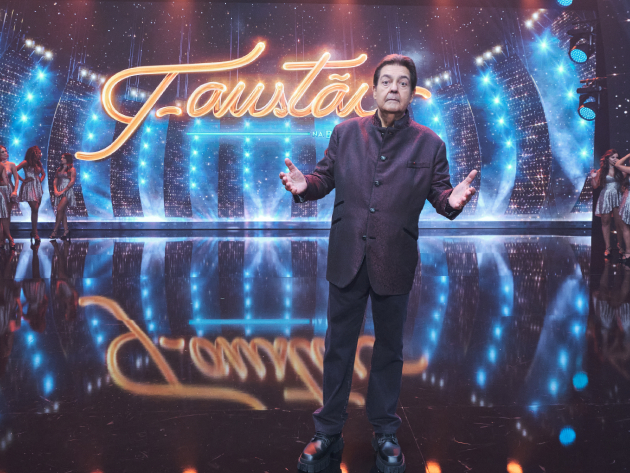

Curiosidades do Oscar 2022
Steven Spielberg quebrou o próprio recorde ao conseguir o feito de ser indicado como melhor diretor em seis décadas diferentes: Encontros Imediatos de Terceiro Grau (1978), Os Caçadores da Arca Perdida (1981), ET – O Extraterrestre (1982), A Lista de Schindler (1993), O Resgate do Soldado Ryan (1998), Munique (2005), Lincoln (2012) e agora Amor, Sublime Amor, completando pelo menos uma indicação em cada uma das últimas seis décadas. Ele venceu por A Lista de Schindler e O Resgate do Soldado Ryan.
ler mais

Siga o Faustão na Band nas redes sociais
Sucesso na TV brasileira há mais de 30 anos, o programa de Fausto Silva agora vai se relacionar com seu público também nas redes sociais. O Faustão na Band está presente nas principais plataformas digitais, e os internautas vão poder acompanhar as novidades, repercussão, convidados e tudo o que vai rolar no programa em seus perfis oficiais.
ler mais
Jo Soares estava escrevendo um show?
Jô Soares, que morreu na madrugada desta sexta-feira, 5 de agosto, aos 84 anos, ensaiava para retornar aos palcos com a peça “À Meia Luz”, que estrearia em setembro. A informação é de Bruno Cavalcanti, da Folha de S. Paulo.
ler mais